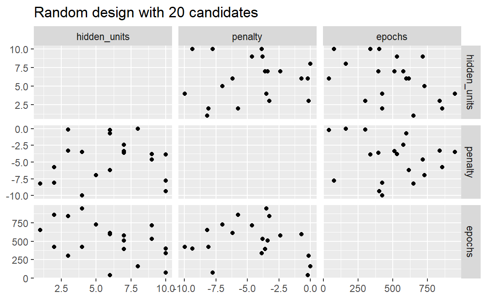
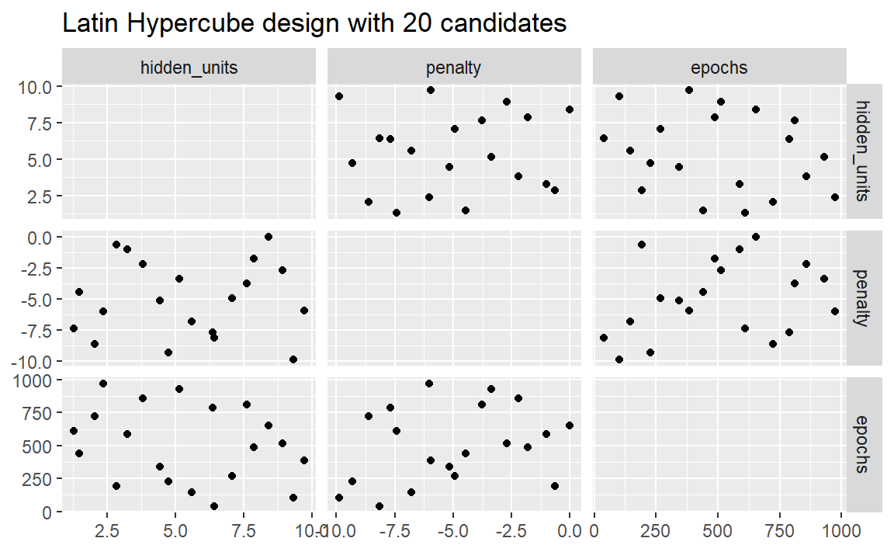
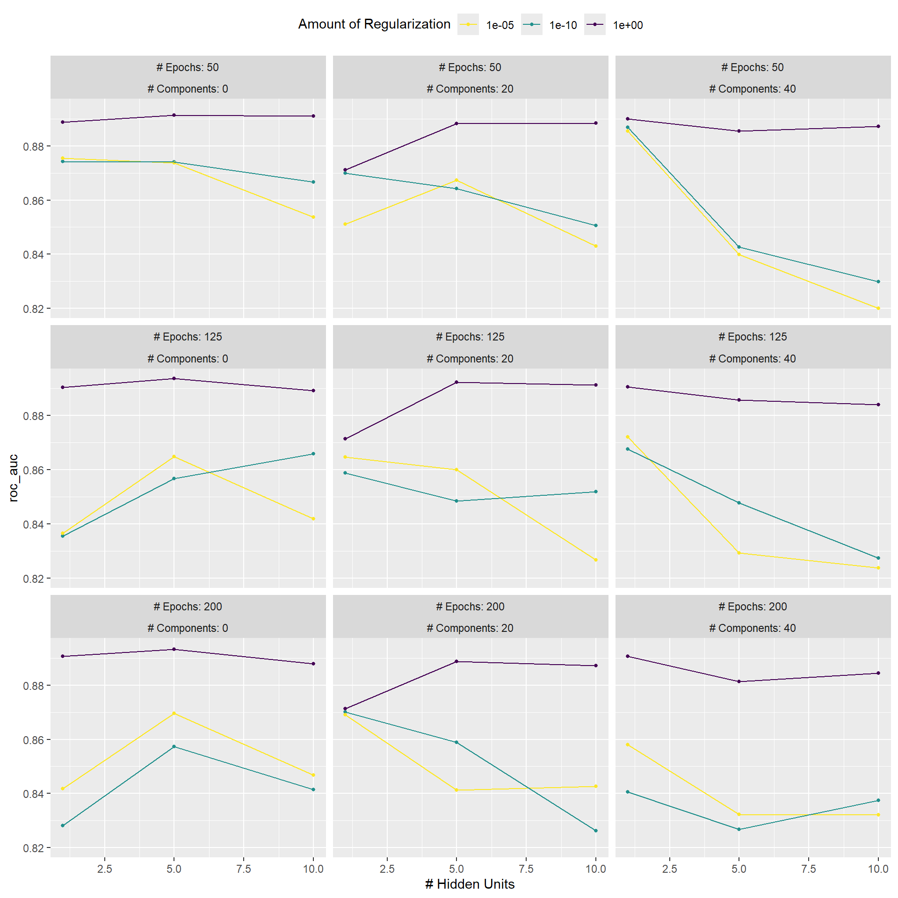
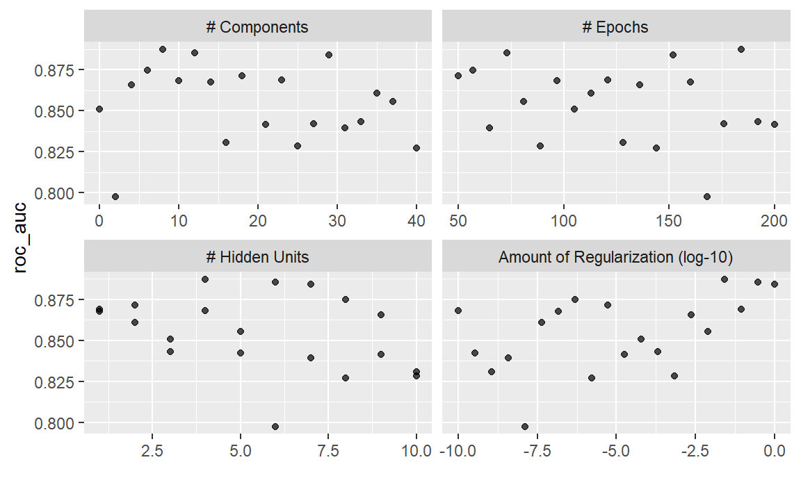
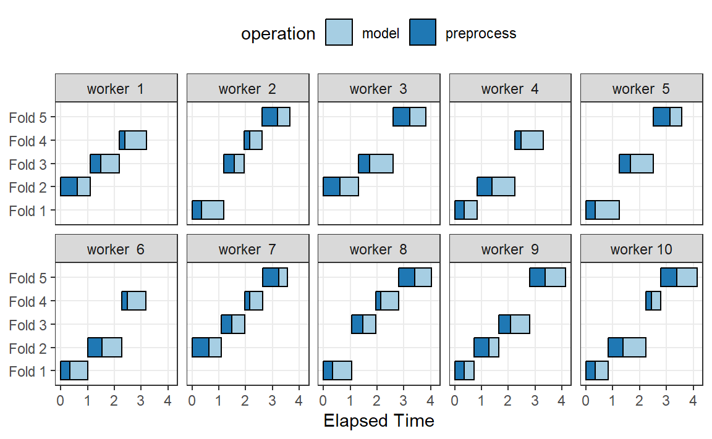
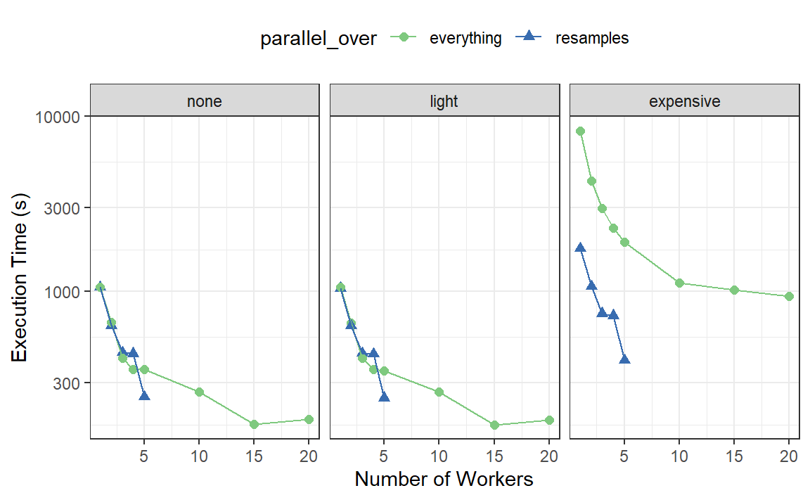
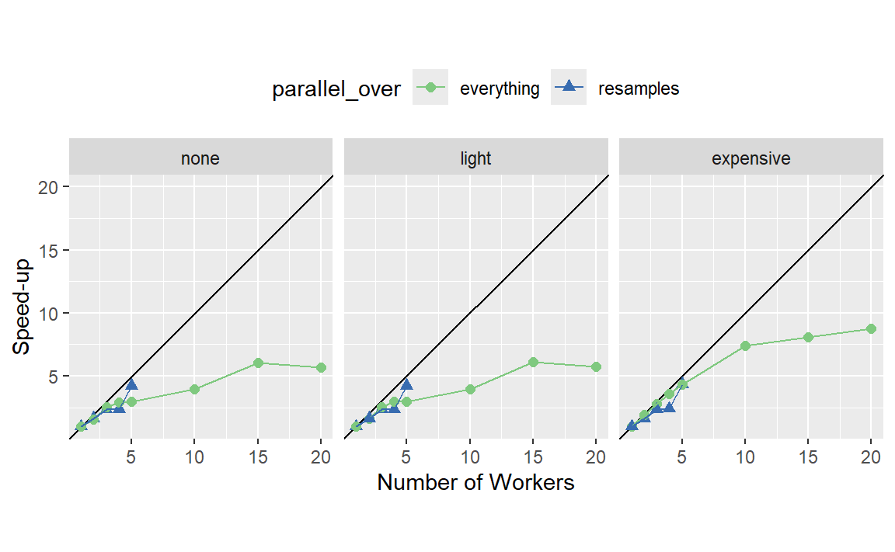
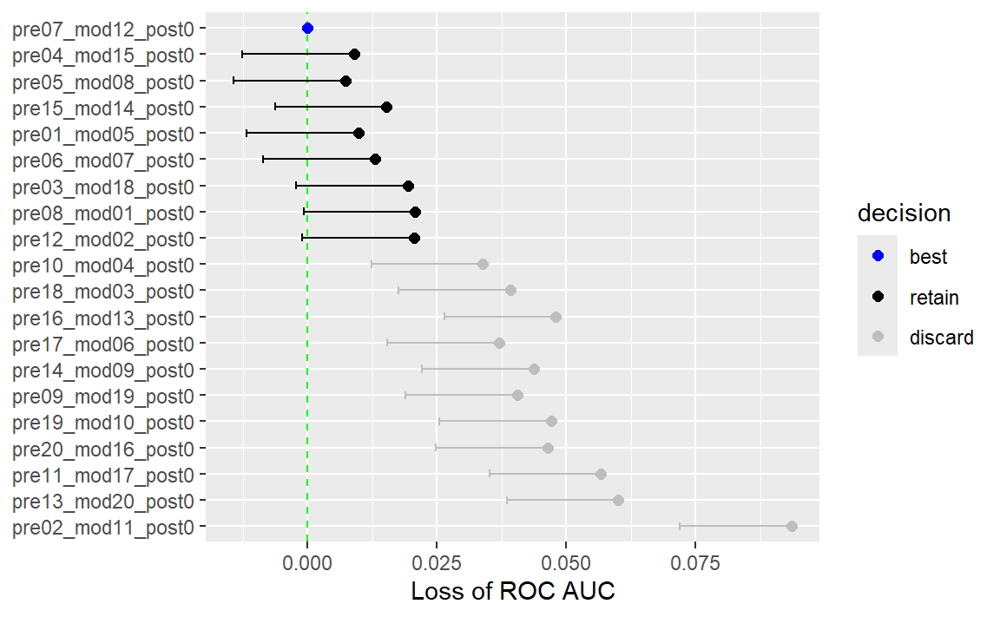

library(tidymodels)
tidymodels_prefer()
mlp_spec <-
mlp(hidden_units = tune(), penalty = tune(), epochs = tune()) %>%
set_engine("nnet", trace = 0) %>%
set_mode("classification")13 Grid Search
在第12章中，我们演示了如何在预处理recipe对象和模型中，使用tune()函数标记待优化的参数。一旦确定了要优化的内容，接下来就要解决如何优化参数的问题。本章将介绍网格搜索（grid search）方法，这种方法可以先验地指定参数的可能值。第14章将继续讨论，介绍迭代搜索（iterative search）方法。
让我们先来看两种构建网格的主要方法。
Regular and Nonregular Grids
网格主要有两种类型。规则网格（regular grid）将每个参数（及其对应的一组可能值）以阶乘方式组合，也就是说，使用这些集合的所有组合。另外，非规则网格（nonregular grid）是指参数组合并非由一小组点形成的网格。
在我们更详细地研究每种类型之前，让我们考虑一个示例模型：多层感知器模型（又名单层人工神经网络）。标记为需要调整的参数如下：
hidden_units：隐藏层单元数epochs：模型训练中的拟合轮次/迭代次数penalty：权重衰减惩罚的量
从历史上看，时期数是通过早停法来确定的；一个单独的验证集根据错误率来决定训练的时长，因为对训练集进行重复预测会导致过拟合。在我们的案例中，使用权重衰减惩罚应该能防止过拟合，而且调整惩罚项和时期数几乎没有坏处。
使用parsnip包和nnet包拟合分类模型的示例如下：
参数trace = 0可防止对训练过程进行额外的日志记录。如第12.6节所示，extract_parameter_set_dials()函数能够提取具有未知值的参数集，并设置它们的dials对象：
mlp_param <- extract_parameter_set_dials(mlp_spec)
mlp_param %>% extract_parameter_dials("hidden_units")
mlp_param %>% extract_parameter_dials("penalty")
mlp_param %>% extract_parameter_dials("epochs")此输出表明参数对象是完整的，并打印了它们的默认范围。这些值将用于演示如何创建不同类型的参数网格。
Regular grids
规则网格是不同参数值集合的组合。首先，用户为每个参数创建一组不同的值。每个参数的可能值数量不必相同。tidyr包中的函数crossing()是创建规则网格的一种方法：
参数对象知道参数的范围。dials包包含一组grid_*()函数，这些函数将参数对象作为输入，以生成不同类型的网格。例如：
grid_regular(mlp_param, levels = 2)
#> # A tibble: 8 × 3
#> hidden_units penalty epochs
#> <int> <dbl> <int>
#> 1 1 0.0000000001 10
#> 2 10 0.0000000001 10
#> 3 1 1 10
#> 4 10 1 10
#> 5 1 0.0000000001 1000
#> 6 10 0.0000000001 1000
#> # ℹ 2 more rowslevels参数用来设定每个参数创建时的水平数量。它也可以接受一个命名的值向量：
mlp_param %>%
grid_regular(levels = c(hidden_units = 3, penalty = 2, epochs = 2))
#> # A tibble: 12 × 3
#> hidden_units penalty epochs
#> <int> <dbl> <int>
#> 1 1 0.0000000001 10
#> 2 5 0.0000000001 10
#> 3 10 0.0000000001 10
#> 4 1 1 10
#> 5 5 1 10
#> 6 10 1 10
#> # ℹ 6 more rows一些创建规则网格的技术不会使用每个参数集的所有可能值，例如部分因子设计（fractional factorial designs，Box, Hunter, and Hunter，2005）。要了解更多信息，请查阅“CRAN Task View”中的实验设计部分。
规则网格的一个优点是，调优参数与模型指标之间的关系和模式易于理解。这些设计的因子特性使得可以单独检查每个参数，且参数之间的混淆很少。规则网格的一个缺点是，当存在（中）大量的调优参数时，可能在计算上成本较高。但并非所有模型都这样，如下文13.5节所讨论的，有许多模型的调优时间会随着规则网格而减少！
Irregular grids
创建非规则网格有几种选择。第一种是在参数范围内进行随机抽样。grid_random()函数会在参数范围内生成独立的均匀随机数。如果参数对象有相关的转换（比如我们对penalty所做的转换），则随机数会在转换后的尺度上生成。让我们为示例神经网络的参数创建一个随机网格：
set.seed(1301)
mlp_param %>%
grid_random(size = 1000) %>% # 'size' is the number of combinations
summary()
#> hidden_units penalty epochs
#> Min. : 1.000 Min. :0.0000000 Min. : 10.0
#> 1st Qu.: 3.000 1st Qu.:0.0000000 1st Qu.:265.8
#> Median : 5.000 Median :0.0000061 Median :497.0
#> Mean : 5.381 Mean :0.0437435 Mean :509.5
#> 3rd Qu.: 8.000 3rd Qu.:0.0026854 3rd Qu.:761.0
#> Max. :10.000 Max. :0.9814405 Max. :999.0对于penalty，随机数在对数（以10为底）尺度上是均匀分布的，但网格中的值是以自然单位表示的。
随机网格的问题在于，对于中小规模的网格，随机值可能会导致参数组合重叠。此外，随机网格需要覆盖整个参数空间，但良好覆盖的可能性是会随着网格值数量的增加而提高。即使对于15个候选点的样本，Figure 1 也显示了我们示例中的多层感知器的点之间存在一些重叠。
library(ggforce)
set.seed(1302)
mlp_param %>%
# The 'original = FALSE' option keeps penalty in log10 units
grid_random(size = 20, original = FALSE) %>%
ggplot(aes(x = .panel_x, y = .panel_y)) +
geom_point() +
geom_blank() +
facet_matrix(vars(hidden_units, penalty, epochs), layer.diag = 2) +
labs(title = "Random design with 20 candidates")

一种好得多的方法是使用一组称为空间填充设计（space-filling designs）的实验设计。虽然不同的设计方法目标略有不同，但它们通常会找到一种能够覆盖参数空间，且点重叠或值冗余的可能性最小的点配置。这类设计的例子包括：
- “Latin hypercubes”（McKay, Beckman, and Conover 1979），
- “maximum entropy designs”（Shewry and Wynn 1987），
- “maximum projection designs”（Joseph, Gul, and Ba 2015），
更多见 Santner等人（2003）的综述。
dials包包含用于Latin hypercubes和maximum entropy designs的函数。与grid_random()一样，主要输入是参数组合的数量和一个参数对象。让我们在 Figure 2 中比较20个候选参数值的随机设计和Latin hypercubes设计。
set.seed(1303)
mlp_param %>%
grid_latin_hypercube(size = 20, original = FALSE) %>%
ggplot(aes(x = .panel_x, y = .panel_y)) +
geom_point() +
geom_blank() +
facet_matrix(vars(hidden_units, penalty, epochs), layer.diag = 2) +
labs(title = "Latin Hypercube design with 20 candidates")

尽管并不完美，但这种Latin hypercubes设计能让各点之间的距离更远，从而可以更好地探索超参数空间。
空间填充设计在表示参数空间方面可能非常有效。tune包使用的默认设计是最大熵设计。这些设计往往能生成能很好地覆盖候选空间的网格，并极大地增加找到良好结果的几率。
Evaluating the Grid
为了选择最佳的调优参数组合，每个候选参数集都使用未用于训练该模型的数据进行评估。重抽样方法或单个验证集很适合用于此目的。这一过程（以及语法）与10.3节中使用tune包的fit_resamples()函数的方法非常相似。
重抽样后，用户会选择最合适的候选参数集。选择经验上最佳的参数组合，或者偏向模型拟合的其他方面（如简洁性），可能都是合理的。
在本章和下一章中，我们将使用一个分类数据集来演示模型调优。这些数据来自Hill等人（2007），他们开发了一种用于癌症研究的自动化显微镜实验室工具。该数据集包含对2019个人类乳腺癌细胞的56项成像测量结果。这些预测变量代表了细胞不同部分（例如细胞核、细胞边界等）的形状和强度特征。预测变量之间存在高度的相关性。例如，有几个不同的预测变量用于测量细胞核和细胞边界的大小与形状。此外，许多预测变量各自具有偏斜分布。
每个细胞都属于两个类别中的一个。由于这是自动化实验室测试的一部分，重点在于预测能力而非推断。
这些数据包含在modeldata包中。让我们删除一个分析不需要的列（case）：
data(cells)
cells <- cells %>% select(-case)鉴于数据的维度，我们可以使用10折交叉验证来计算性能指标：
set.seed(1304)
cell_folds <- vfold_cv(cells)由于预测变量之间具有高度的相关性，使用主成分分析（PCA）进行特征提取来消除预测变量的相关性是合理的。下面的流程包含以下步骤：对预测变量进行变换以提高对称性，将它们标准化到同一尺度，然后进行特征提取。需要保留的主成分分析成分数量会与模型参数一起进行调优。虽然得到的主成分分析（PCA）成分在技术上处于相同的尺度，但低阶成分的范围往往比高阶成分更宽。出于这个原因，我们再次进行标准化，以使预测变量具有相同的均值和方差。
许多预测变量具有偏态分布。由于主成分分析（PCA）是基于方差的，极端值可能会对这些计算产生不利影响。为了解决这个问题，让我们添加一个recipe步骤，为每个预测变量估计“Yeo-Johnson”变换（Yeo和Johnson，2000年）。虽然它最初旨在对结果进行变换，但也可用于估计有助于获得更对称分布的变换。这个step_YeoJohnson()步骤在recipe对象中出现在通过step_normalize()进行初始标准化之前。然后，让我们将这个特征工程recipe对象与我们的神经网络模型mlp_spec结合起来。
mlp_rec <-
recipe(class ~ ., data = cells) %>%
step_YeoJohnson(all_numeric_predictors()) %>%
step_normalize(all_numeric_predictors()) %>%
step_pca(all_numeric_predictors(), num_comp = tune()) %>%
step_normalize(all_numeric_predictors())
mlp_wflow <-
workflow() %>%
add_model(mlp_spec) %>%
add_recipe(mlp_rec)让我们创建一个参数对象mlp_param来调整一些默认范围。我们可以将轮次数量改为更小的范围（50到200轮）。此外，num_comp()的默认范围非常狭窄（1到4个成分）；我们可以将该范围扩大到40个成分，并将最小值设置为0：
Tip
在step_pca()中，使用零个主成分分析（PCA）组件是跳过特征提取的快捷方式。通过这种方式，原始预测变量可以直接与包含主成分分析组件的结果进行比较。
tune_grid()函数是进行网格搜索的主要函数。其功能与第10.3节中的fit_resamples()非常相似，但它有一些与网格相关的额外参数：
grid：一个整数或数据框。当使用整数时，该函数会创建一个空间填充设计，其中包含grid数量的候选参数组合。如果存在特定的参数组合，则使用grid参数将它们传递给该函数。param_info：一个用于定义参数范围的可选参数。当grid为整数时，该参数最为有用。
tune_grid()的其他参数接口与fit_resamples()相同。第一个参数要么是模型，要么是工作流。当提供模型时，第二个参数可以是recipe对象或公式。另一个必需的参数是rsample重抽样对象（例如cell_folds）。下面的调用还传递了一个指标集，以便在重抽样过程中测量ROC曲线下面积。
首先，让我们评估一个在重采样中包含三个级别的常规网格：
roc_res <- metric_set(roc_auc)
set.seed(1305)
mlp_reg_tune <-
mlp_wflow %>%
tune_grid(
cell_folds,
grid = mlp_param %>% grid_regular(levels = 3),
metrics = roc_res
)
mlp_reg_tune
#> # Tuning results
#> # 10-fold cross-validation
#> # A tibble: 10 × 4
#> splits id .metrics .notes
#> <list> <chr> <list> <list>
#> 1 <split [1817/202]> Fold01 <tibble [81 × 8]> <tibble [0 × 4]>
#> 2 <split [1817/202]> Fold02 <tibble [81 × 8]> <tibble [0 × 4]>
#> 3 <split [1817/202]> Fold03 <tibble [81 × 8]> <tibble [0 × 4]>
#> 4 <split [1817/202]> Fold04 <tibble [81 × 8]> <tibble [0 × 4]>
#> 5 <split [1817/202]> Fold05 <tibble [81 × 8]> <tibble [0 × 4]>
#> 6 <split [1817/202]> Fold06 <tibble [81 × 8]> <tibble [0 × 4]>
#> # ℹ 4 more rows我们可以使用一些高级便捷函数来理解结果。首先，用于规则网格的autoplot()方法在 Figure 3 中展示了不同调优参数下的性能概况。
autoplot(mlp_reg_tune) +
scale_color_viridis_d(direction = -1) +
theme(legend.position = "top")

对于这些数据，惩罚量对ROC曲线下面积的影响最大。 epoch数似乎对性能没有显著影响。当正则化量较低时，隐藏单元数量的变化影响最大（并且会损害性能）。有几种参数配置的性能大致相当，这可以通过函数show_best()看出：
show_best(mlp_reg_tune) %>% select(-.estimator)
#> # A tibble: 5 × 9
#> hidden_units penalty epochs num_comp .metric mean n std_err
#> <int> <dbl> <int> <int> <chr> <dbl> <int> <dbl>
#> 1 5 1 125 0 roc_auc 0.894 10 0.00851
#> 2 5 1 200 0 roc_auc 0.893 10 0.00808
#> 3 5 1 125 20 roc_auc 0.892 10 0.0104
#> 4 5 1 50 0 roc_auc 0.891 10 0.00868
#> 5 10 1 125 20 roc_auc 0.891 10 0.00867
#> # ℹ 1 more variable: .config <chr>根据这些结果，进行另一轮网格搜索是合理的，此次搜索应采用更大的权重衰减惩罚值。
要使用空间填充设计，既可以给grid参数赋一个整数，也可以使用某个grid_*()函数生成一个数据框。要使用具有20个候选值的最大熵设计来评估相同的范围：
set.seed(1306)
mlp_sfd_tune <-
mlp_wflow %>%
tune_grid(
cell_folds,
grid = 20,
# Pass in the parameter object to use the appropriate range:
param_info = mlp_param,
metrics = roc_res
)
mlp_sfd_tune
#> # Tuning results
#> # 10-fold cross-validation
#> # A tibble: 10 × 4
#> splits id .metrics .notes
#> <list> <chr> <list> <list>
#> 1 <split [1817/202]> Fold01 <tibble [20 × 8]> <tibble [0 × 4]>
#> 2 <split [1817/202]> Fold02 <tibble [20 × 8]> <tibble [0 × 4]>
#> 3 <split [1817/202]> Fold03 <tibble [20 × 8]> <tibble [0 × 4]>
#> 4 <split [1817/202]> Fold04 <tibble [20 × 8]> <tibble [0 × 4]>
#> 5 <split [1817/202]> Fold05 <tibble [20 × 8]> <tibble [0 × 4]>
#> 6 <split [1817/202]> Fold06 <tibble [20 × 8]> <tibble [0 × 4]>
#> # ℹ 4 more rowsautoplot()方法也适用于这些设计，不过结果的格式会有所不同。Figure 4 是使用autoplot(mlp_sfd_tune)生成的。
autoplot(mlp_sfd_tune)

autoplot() method results when used with a space-filling design
这个边际效应图（ Figure 4 ）展示了每个参数与性能指标之间的关系。查看此图表时要注意：由于未使用规则网格，其他调优参数的值可能会影响每个面板。
惩罚参数在权重衰减量较小时似乎能带来更好的性能。这与常规网格的结果相反。由于每个面板中的每个点都与其他三个调优参数相关联，因此一个面板中的趋势可能会受到其他面板的影响。使用常规网格时，每个面板中的每个点都会在其他参数上进行均等平均。因此，使用常规网格能更好地分离每个参数的影响。
与常规网格一样，show_best()可以报告数值上最佳的结果：
show_best(mlp_sfd_tune) %>% select(-.estimator)
#> # A tibble: 5 × 9
#> hidden_units penalty epochs num_comp .metric mean n std_err
#> <int> <dbl> <int> <int> <chr> <dbl> <int> <dbl>
#> 1 4 0.0264 184 8 roc_auc 0.887 10 0.00928
#> 2 6 0.298 73 12 roc_auc 0.885 10 0.0107
#> 3 7 1 152 29 roc_auc 0.884 10 0.00764
#> 4 8 0.000000483 57 6 roc_auc 0.875 10 0.00774
#> 5 2 0.00000546 50 18 roc_auc 0.871 10 0.00931
#> # ℹ 1 more variable: .config <chr>一般来说，通过多个指标对模型进行评估是个不错的主意，这样可以考虑到模型拟合的不同方面。此外，选择一个与更简单模型相关联的略次优的参数组合往往是合理的。对于这个模型而言，简单性对应的是更大的惩罚值和/或更少的隐藏单元。
与fit_resamples()的结果一样，通常没有必要保留不同重抽样和调优参数下的中间模型拟合结果。不过，和之前一样，control_grid()的extract选项允许保留拟合好的模型和/或recipe对象。此外，将save_pred选项设置为TRUE会保留评估集的预测结果，这些结果可以通过collect_predictions()进行访问。
Finalizing the Model
如果通过show_best()找到的某组可能的模型参数对于这些数据来说是一个有吸引力的最终选项，我们可能希望评估它在测试集上的表现。然而，tune_grid()的结果仅为选择合适的调优参数提供了基础。该函数不会拟合最终模型。
要拟合最终模型，必须确定一组最终的参数值。有两种方法可以做到这一点：
- 手动选择看起来合适的值，或者
- 使用
select_*()函数。
例如，select_best()会选择在数值上结果最佳的参数。让我们回到常规网格的结果，看看哪一个是最佳的：
select_best(mlp_reg_tune, metric = "roc_auc")
#> # A tibble: 1 × 5
#> hidden_units penalty epochs num_comp .config
#> <int> <dbl> <int> <int> <chr>
#> 1 5 1 125 0 pre1_mod17_post0回顾 Figure 3 ，我们可以看到，一个具有单个隐藏单元、在原始预测变量上训练125个epochs且带有大量惩罚项的模型，其性能与该选项相当，而且更简单。这本质上就是有惩罚项的逻辑回归！要手动指定这些参数，我们可以创建一个包含这些值的tibble，然后使用最终确定函数将这些值拼接回工作流中：
logistic_param <-
tibble(
num_comp = 0,
epochs = 125,
hidden_units = 1,
penalty = 1
)
final_mlp_wflow <-
mlp_wflow %>%
finalize_workflow(logistic_param)
final_mlp_wflow
#> ══ Workflow ═════════════════════════════════════════════════════════════════
#> Preprocessor: Recipe
#> Model: mlp()
#>
#> ── Preprocessor ─────────────────────────────────────────────────────────────
#> 4 Recipe Steps
#>
#> • step_YeoJohnson()
#> • step_normalize()
#> • step_pca()
#> • step_normalize()
#>
#> ── Model ────────────────────────────────────────────────────────────────────
#> Single Layer Neural Network Model Specification (classification)
#>
#> Main Arguments:
#> hidden_units = 1
#> penalty = 1
#> epochs = 125
#>
#> Engine-Specific Arguments:
#> trace = 0
#>
#> Computational engine: nnet在此最终确定的工作流程中，不再包含tune()的更多值。现在可以将模型拟合到整个训练集：
final_mlp_fit <-
final_mlp_wflow %>%
fit(cells)现在可以使用这个对象对新数据进行未来预测。
如果您没有使用工作流，则模型和/或recipe对象的最终确定是通过finalize_model()和finalize_recipe()来完成的。
Tools for Creating Tuning Specifications
usemodels包可以接收一个数据框和模型公式，然后生成用于模型调优的R代码。该代码还会创建一个合适的recipe对象，其步骤取决于所请求的模型以及预测变量数据。
例如，对于Ames房价数据，可以使用以下代码创建xgboost建模代码：
library(usemodels)
use_xgboost(
Sale_Price ~ Neighborhood + Gr_Liv_Area + Year_Built + Bldg_Type +
Latitude + Longitude,
data = ames_train,
# Add comments explaining some of the code:
verbose = TRUE
)生成的代码如下：
xgboost_recipe <-
recipe(formula = Sale_Price ~ Neighborhood + Gr_Liv_Area + Year_Built + Bldg_Type +
Latitude + Longitude, data = ames_train) %>%
step_novel(all_nominal_predictors()) %>%
## This model requires the predictors to be numeric. The most common
## method to convert qualitative predictors to numeric is to create
## binary indicator variables (aka dummy variables) from these
## predictors. However, for this model, binary indicator variables can be
## made for each of the levels of the factors (known as 'one-hot
## encoding').
step_dummy(all_nominal_predictors(), one_hot = TRUE) %>%
step_zv(all_predictors())
xgboost_spec <-
boost_tree(trees = tune(), min_n = tune(), tree_depth = tune(), learn_rate = tune(),
loss_reduction = tune(), sample_size = tune()) %>%
set_mode("regression") %>%
set_engine("xgboost")
xgboost_workflow <-
workflow() %>%
add_recipe(xgboost_recipe) %>%
add_model(xgboost_spec)
set.seed(69305)
xgboost_tune <-
tune_grid(xgboost_workflow,
resamples = stop("add your rsample object"),
grid = stop("add number of candidate points"))根据usemodels对数据的理解，这段代码是所需的最低限度预处理。对于其他模型，会添加像step_normalize()这样的操作来满足模型的基本需求。需要注意的是，作为建模从业者，选择用于调优的resamples以及grid类型是我们的责任。
通过将参数tune = FALSE进行设置，usemodels包还可用于创建无需调优的模型拟合代码。
Tools for Efficient Grid Search
通过应用一些不同的技巧和优化方法，可以提高网格搜索的计算效率。本节将介绍几种技术。
Submodel optimization
有些模型，只需一次模型拟合，就可以在不重新拟合的情况下评估多个调优参数。
例如，偏最小二乘（PLS）是主成分分析的一种有监督版本（Geladi 和 Kowalski，1986）。它会创建能最大化预测变量变异的成分（类似主成分分析），但同时还会尝试最大化这些预测变量与结果之间的相关性。我们将在第16章更深入地探讨偏最小二乘。其中一个调优参数是要保留的偏最小二乘成分数量。假设使用偏最小二乘对一个包含100个预测变量的数据集进行拟合，可能保留的成分数量范围可以是1到50。不过，在许多实现中，单次模型拟合就可以计算多个num_comp值对应的预测值。因此，一个包含100个成分的偏最小二乘模型也能对任何num_comp <= 100的情况进行预测。这节省了时间，因为无需进行冗余的模型拟合，一次拟合就可以用于评估多个子模型。
虽然并非所有模型都能利用这一特性，但许多被广泛使用的模型可以：
Boosting模型通常能够针对多个不同的Boosting迭代次数进行预测。
正则化方法（例如glmnet模型）能够基于拟合模型时所使用的不同正则化量，同时进行预测。
多元自适应回归样条（MARS）为线性回归模型添加了一组非线性特征（Friedman，1991）。需要保留的项数是一个调优参数，而且从单个模型拟合中就可以针对该参数的多个值快速进行预测计算。
每当对适用的模型进行调优时，tune包会自动应用这种类型的优化。例如，如果将增强型 “C5.0”分类模型（M. Kuhn and Johnson，2013）应用于细胞数据，我们可以调整增强迭代的次数（trees）。在所有其他参数设为默认值的情况下，我们可以在与之前相同的重采样上评估1到100次的迭代：
c5_spec <-
boost_tree(trees = tune()) %>%
set_engine("C5.0") %>%
set_mode("classification")
set.seed(1307)
c5_spec %>%
tune_grid(
class ~ .,
resamples = cell_folds,
grid = data.frame(trees = 1:100),
metrics = roc_res
)如果不进行子模型优化，调用tune_grid()来重采样100个子模型需要62.2分钟。而进行优化后，相同的调用仅耗时100秒（速度提升了37倍）。时间的减少源于tune_grid()所拟合的模型数量从1000个变为了10个。
尽管我们在拟合模型时使用和不使用子模型预测技巧，但这种优化是由parsnip自动应用的。
Parallel processing
如第10.4节先前所提及的，在对模型进行重抽样时，并行处理是减少执行时间的有效方法。这一优势也体现在通过网格搜索进行模型调优的过程中，不过还存在一些额外的注意事项。
让我们来考虑两种不同的并行处理方案。
在通过网格搜索调整模型时，存在两个不同的循环：一个是针对重采样的循环，另一个是针对独特的调整参数组合的循环。用伪代码表示，这个过程如下：
for (rs in resamples) {
# Create analysis and assessment sets
# Preprocess data (e.g. formula or recipe)
for (mod in configurations) {
# Fit model {mod} to the {rs} analysis set
# Predict the {rs} assessment set
}
}默认情况下，tune包仅对重采样（外循环）进行并行处理，而不是同时对内外循环进行并行处理。
当预处理方法成本较高时，这是最佳方案。然而，这种方法存在两个潜在的缺点：
当预处理成本不高时，这会限制可实现的速度提升。
并行工作进程的数量受重采样数量的限制。例如，在10折交叉验证中，即使计算机的核心数超过10个，也只能使用10个并行工作进程。
为了说明并行处理是如何工作的，我们将使用一个包含7个模型调优参数值且采用5折交叉验证的案例。Figure 5 展示了任务是如何分配给工作进程的。

请注意，每个折都被分配给它自己的工作进程，而且由于只对模型参数进行调优，所以每个折/工作进程会执行一次预处理。如果使用的工作进程少于五个，那么一些工作进程会接收多个折。
在tune_*()函数的控制函数中，parallel_over参数控制着流程的执行方式。要使用之前的并行化策略，该参数应设置为parallel_over = "resamples"。
不采用并行处理重采样的方式，另一种方案将重采样和模型上的循环合并为一个单一循环。用伪代码表示，这个过程如下：
all_tasks <- crossing(resamples, configurations)
for (iter in all_tasks) {
# Create analysis and assessment sets for {iter}
# Preprocess data (e.g. formula or recipe)
# Fit model {iter} to the {iter} analysis set
# Predict the {iter} assessment set
}在这种情况下，并行化现在在单个循环上进行。例如，如果我们使用带有 \(M\) 个调优参数值的5折交叉验证，那么这个循环将执行 \(5×M\) 次迭代。这增加了可使用的潜在工作进程数量。然而，与数据预处理相关的工作会被重复多次。如果这些步骤的成本很高，这种方法就会效率低下。在tidymodels中，验证集被视为单个重采样，这种情况下，这种并行化方案将是最佳的。
Figure 6 展示了此方案向工作进程分配任务的情况；使用了相同的示例，但有10个工作进程。

在这里，每个工作进程处理多个折数，并且预处理被不必要地重复进行。例如，对于第一个折数，预处理被计算了七次，而不是一次。
对于这种方案，控制函数的参数是parallel_over = "everything"。
Benchmarking boosted trees
为了比较不同可能的并行化方案，我们使用xgboost引擎，在包含4000个样本的数据集上对一个提升树进行了调优，采用了5折交叉验证和10个候选模型。这些数据需要一些不需要任何估计的基线预处理。预处理通过三种不同的方式进行：
- 在建模前使用dplyr管道对数据进行预处理（标记为“none”）。
- 通过一个流程执行相同的预处理（标记为“light”）。
- 使用recipe对象时，添加一个计算成本高的额外步骤（标记为“expensive”）。
第一种和第二种预处理选项旨在进行比较，以衡量第二种选项中recipe对象的计算成本。第三种选项衡量在parallel_over = "everything"的情况下执行冗余计算的成本。
我们在一台拥有10个物理核心和20个虚拟核心（通过超线程实现）的计算机上，使用不同数量的工作进程以及两种parallel_over选项对这一过程进行了评估。由于只有五次重采样，所以当parallel_over = "resamples"时，使用的核心数量被限制为五个。
结果如 Figure 7 所示：

比较前两个面板中“none”和“light”的曲线：
这些面板之间的执行时间几乎没有差异。这表明，对于这些数据而言，在recipe对象中执行预处理步骤并不会带来实际的计算代价。
使用
parallel_over = "everything"搭配多个核心会有一些好处。然而，如图所示，并行处理的大部分好处出现在前五个工作进程中。
由于存在昂贵的预处理步骤，执行时间存在显著差异。使用parallel_over = "everything"会产生问题，因为即使使用所有内核，其执行时间也始终无法达到parallel_over = "resamples"仅用五个内核时所达到的水平。这是因为在计算方案中，昂贵的预处理步骤被不必要地重复执行了。
我们也可以在 Figure 8 中从加速比的角度查看这些数据。

对于这些数据，最佳的加速效果出现在parallel_over = "resamples"且计算量较大的情况下。然而，在后一种情况下，请记住，先前的分析表明整体模型拟合速度会更慢。
将子模型优化方法与并行处理结合使用有什么好处？第13.5.1节中展示的C5.0分类模型也使用10个工作进程进行了并行运行。并行计算耗时13.3秒，实现了7.5倍的速度提升（两次运行都使用了子模型优化技巧）。与最基础的网格搜索代码相比，子模型优化技巧和并行处理相结合总共实现了282倍的速度提升。
总的来说，要注意的是，计算节省的增加量会因模型而异，并且还会受到网格大小、重采样次数等因素的影响。一个计算效率非常高的模型可能从并行处理中获益不多。
Access to global variables
使用tidymodels时，可以在模型对象中使用本地环境（通常是全局环境）中的值。这里所说的“环境”是什么意思呢？可以把R语言中的环境看作是一个存储你可以操作的变量的地方。想要了解更多信息，请参阅 Advanced R 中“Environment”章节。
如果我们定义一个变量用作模型参数，然后将其传递给像linear_reg()这样的函数，该变量通常是在全局环境中定义的。
coef_penalty <- 0.1
spec <- linear_reg(penalty = coef_penalty) %>% set_engine("glmnet")
spec
#> Linear Regression Model Specification (regression)
#>
#> Main Arguments:
#> penalty = coef_penalty
#>
#> Computational engine: glmnet使用parsnip包创建的模型会将诸如此类的参数保存为准引用（quosures）；这些对象既会记录对象的名称，也会记录其所在的环境：
spec$args$penalty
#> <quosure>
#> expr: ^coef_penalty
#> env: global注意，结果有env: global，因为这个变量是在全局环境中创建的。由spec定义的模型规范在用户的常规会话中运行时能正常工作，因为该会话也在使用全局环境；R可以轻松找到coef_penalty对象。当使用并行工作进程评估此类模型时，它可能会失败。这取决于用于并行处理的特定技术，工作进程可能无法访问全局环境。
在编写将并行运行的代码时，将实际数据插入到对象中而非对象的引用，是个不错的主意。rlang和dplyr包在这方面会很有帮助。例如，!!运算符可以将单个值拼接进一个对象：
spec <- linear_reg(penalty = !!coef_penalty) %>% set_engine("glmnet")
spec$args$penalty
#> <quosure>
#> expr: ^0.1
#> env: empty现在输出结果是^0.1，这表明存在的是值而非对对象的引用。当你有多个外部值要插入到一个对象中时，!!!运算符会有所帮助：
mcmc_args <- list(chains = 3, iter = 1000, cores = 3)
linear_reg() %>% set_engine("stan", !!!mcmc_args)
#> Linear Regression Model Specification (regression)
#>
#> Engine-Specific Arguments:
#> chains = 3
#> iter = 1000
#> cores = 3
#>
#> Computational engine: stanrecipe对象选择器是另一个你可能希望访问全局变量的地方。假设你有一个recipe对象步骤，该步骤应该使用细胞数据中所有通过第二个光学通道测量的预测变量。我们可以创建这些列名的向量：
library(stringr)
ch_2_vars <- str_subset(names(cells), "ch_2")
ch_2_vars
#> [1] "avg_inten_ch_2" "total_inten_ch_2"我们可以将这些硬编码到一个recipe对象步骤中，但更好的做法是通过编程方式引用它们，以防数据发生变化。有两种实现方法：
后者更适合并行处理，因为所有所需信息都嵌入在recipe对象对象中。
Racing methods
网格搜索的一个问题是，所有模型都需要在所有重采样上进行拟合，之后才能评估任何调优参数。相反，如果能在调优过程中的某个时刻进行中期分析，以排除任何确实糟糕的参数候选者，那将会很有帮助。这类似于临床试验中的无效性分析。如果一种新药的表现极差（或极好），等到试验结束再做决定可能是不道德的。
在机器学习中，被称为竞赛方法（racing methods）的一系列技术具有类似的功能（Maron and Moore，1994）。在这里，调优过程会在重抽样的初始子集上评估所有模型。根据它们当前的性能指标，某些参数集不会在后续的重抽样中被考虑。
例如，在本章探讨的使用规则网格的多层感知器调优过程中，仅经过前三个折后的结果会是什么样子？使用与第11章所示类似的技术，我们可以拟合一个模型，其中结果是重采样的ROC曲线下面积，而预测变量是参数组合的指示器。该模型考虑了重采样之间的效应，并为每个参数设置生成点估计和区间估计。模型的结果是单侧95%置信区间，用于衡量相对于当前表现最佳参数的ROC值损失，如 Figure 9 所示。

任何置信区间包含零的参数组，都缺乏证据表明其性能与最佳结果存在统计学上的差异。我们保留了6种设置，对这些设置进行更多的重抽样。其余14个子模型不再被考虑。
该过程会在每个重采样中持续进行；在获取下一组性能指标后，会根据这些统计数据拟合一个新模型，并且可能会舍弃更多的子模型。
只要中期分析速度快且某些参数设置性能较差，竞赛方法就可能比基本的网格搜索更高效。当模型不具备利用子模型预测的能力时，这种方法也最有帮助。
finetune包包含用于竞赛的函数。tune_race_anova()函数通过ANOVA模型来检验不同模型配置的统计显著性。重现前面所示筛选过程的语法如下：
library(finetune)
set.seed(1309)
mlp_sfd_race <-
mlp_wflow %>%
tune_race_anova(
cell_folds,
grid = 20,
param_info = mlp_param,
metrics = roc_res,
control = control_race(verbose_elim = TRUE)
)这些参数与tune_grid()的参数相似。control_race()函数具有用于消除过程的选项。
如上面的动画所示，在评估完完整的重采样集后，有两种调优参数组合在考虑范围内。show_best()返回表现最佳的模型（按性能排名），但只返回从未被淘汰的配置：
show_best(mlp_sfd_race, n = 10)
#> # A tibble: 4 × 10
#> hidden_units penalty epochs num_comp .metric .estimator mean n std_err
#> <int> <dbl> <int> <int> <chr> <chr> <dbl> <int> <dbl>
#> 1 4 2.64e-2 184 8 roc_auc binary 0.882 10 0.00988
#> 2 7 1 e+0 152 29 roc_auc binary 0.882 10 0.00937
#> 3 6 2.98e-1 73 12 roc_auc binary 0.881 10 0.0103
#> 4 8 4.83e-7 57 6 roc_auc binary 0.880 10 0.00940
#> # ℹ 1 more variable: .config <chr>还有其他用于舍弃设置的中期分析技术。例如， Krueger, Panknin, and Braun（2015）使用传统的序贯分析方法，而 Max Kuhn（2014）则将数据视为体育比赛，并使用“Bradley-Terry”模型（Bradley and Terry，1952）来衡量参数设置的获胜能力。
Chapter Summary
本章讨论了可用于模型调优的网格搜索的两个主要类别（常规和非常规），并演示了如何构建这些网格，既可以手动构建，也可以使用grid_*()函数族。tune_grid()函数可以通过重抽样来评估这些候选模型参数集。本章还展示了如何确定模型、recipe对象或工作流的最终版本，以更新最终拟合的参数值。网格搜索可能计算成本很高，但在这类搜索的实验设计中做出深思熟虑的选择可以使其变得易于处理。
下一章将重用的数据分析代码如下：
library(tidymodels)
data(cells)
cells <- cells %>% select(-case)
set.seed(1304)
cell_folds <- vfold_cv(cells)
roc_res <- metric_set(roc_auc)